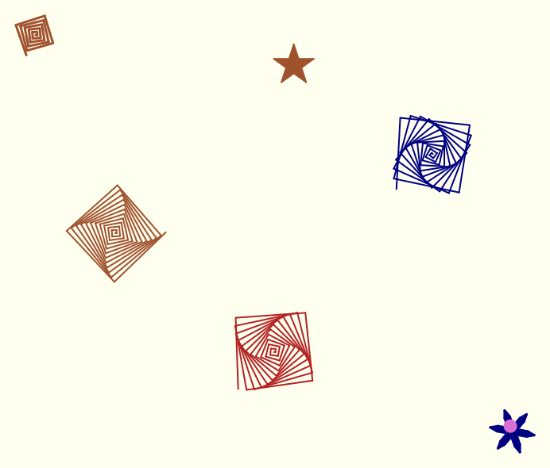
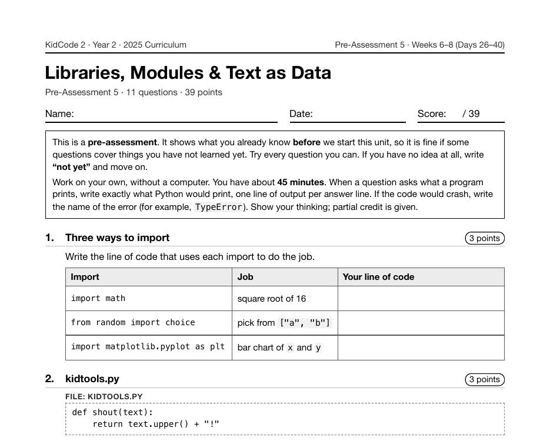

Year 2 · 2025 · Building Complexity
Project 12: Turtle Art Studio
Turtle Art Studio is Project 12, on Day 28 of Year 2, in the week on modules and libraries. Students use Python's built-in turtle module (turtle objects with methods like forward(), left() and begin_fill()) and write loops and functions that draw spirals, stars and a draw_flower() function.
What I taught that week
From the Year 2 curriculum, Week 6: Libraries & Modules
Day 26: Modules & the Standard Library. A module is a .py file of ready-made tools and a library is a collection of them. Using import, from ... import, and as. Touring math, random, datetime, string, and collections.
Day 27: Your Own Module & the Docs. Moving helpers like the cipher and ask_number() into kidtools.py and importing them. Reading Python's official documentation: finding a function and reading its signature.
Day 28: Lab: Turtle Art Studio. Project 6. Using the built-in turtle library: turtle objects with methods such as forward(), left(), and begin_fill(). Loops and functions draw spirals, stars, and a draw_flower() function.
Day 29: pip & Third-Party Libraries. What PyPI is and how pip install works, and the difference between a module, package, and library. Installing rich for colorful text, reading a README, and fixing a failed install safely.
Day 30: Lab: Class Survey Dashboard. Installing matplotlib and drawing bar charts with plt.bar(), titles, labels, and plt.show(). Loading survey answers from a CSV file and charting the results.
What students built
37 students made turtle art. Every one uses filled shapes and defines a draw_flower() function, and the median program defines 5 functions. It is the least-completed project of Year 2.
One student's program
This is one real submission, shown as the student wrote it apart from the removed name header. It was chosen by a fixed rule rather than for being the best: it is the submission closest to the project's median length among those that ran cleanly and contain nothing that could identify anyone. Parts are skipped where marked with …
def jump(t, x, y):
t.penup()
t.goto(x, y)
t.pendown()
def draw_spiral(t, steps, angle, color):
t.color(color)
for i in range(steps):
t.forward(i * 2 + 2)
t.left(angle)
def draw_star(t, size, color, points=5):
t.color(color)
t.begin_fill()
for _ in range(points):
t.forward(size)
t.right(180 - 180 / points)
t.end_fill()
def draw_flower(t, petals, size, petal_color, center_color):
for _ in range(petals):
t.color(petal_color)
t.begin_fill()
for _ in range(2):
t.circle(size, 60)
t.left(120)
t.end_fill()
t.left(360 / petals)
t.color(center_color)
t.begin_fill()
t.circle(size / 4)
t.end_fill()
def scene(t):
for angle, x, y in ((SPIRAL_ANGLE, -200, 0), (SPIRAL_ANGLE + 2, 200, 100), (SPIRAL_ANGLE - 3, 0, -150)):
jump(t, x, y)
draw_spiral(t, 45, angle, COLORS[(x // 100) % 5])
jump(t, 0, 220)
draw_star(t, 50, COLORS[3], STAR_POINTS)

The worksheet for this unit
Each unit has a pre- and post-assessment written from the same curriculum. This is the first page of the pre-assessment for the unit this project sits in: Libraries, Modules & Text as Data (Weeks 6–8 (Days 26–40), 11 questions).

Where it fits
The same week installs a third-party library with pip and draws matplotlib bar charts from a CSV file, which is the charting that shows up in Book Detective and most of Year 3.
Looking back
Turtle is the most visual project in the curriculum, which is why its output is shown here as a picture rather than a transcript. The code itself is a good example of Year 2 style: small functions that take arguments like size and color and can be reused across the drawing.